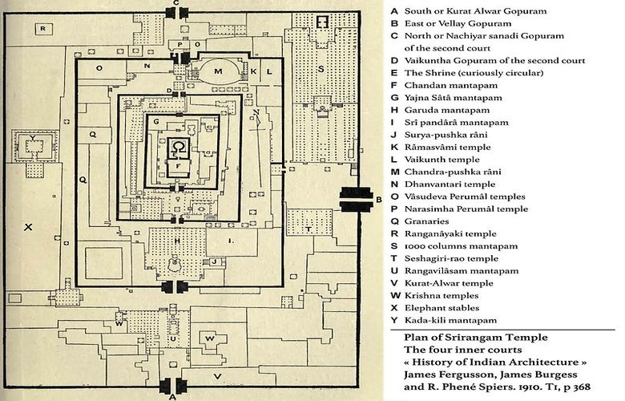

55555
5555
2. Ranganathaswamy Temple, Srirangam
The Sri Ranganathaswamy Temple or Thiruvarangam is a Hindu temple dedicated to
Ranganatha, a reclining form of the Hindu deity Maha Vishnu, located in Srirangam, Tiruchirapalli,
Tamil Nadu, India.Constructed in the Dravidian architectural style, the temple is glorified by
Alvars in their Divya Prabhanda and has the unique distinction of being not only the foremost
among the 108 Divya Desams dedicated to Vishnu, but also the largest functioning Hindu temple in
the world.
It is one of the most illustrious Vaishnava temples in South India rich in legend and history. The
temple has played an important role in Vaishnavism history starting with the 11th-century career of
Ramanuja and his predecessors Nathamuni and Yamunacharya in Srirangam.Its location, on an island
between the Kollidam and Kaveri rivers,has rendered it vulnerable to flooding as well as the
rampaging of invading armies which repeatedly commandeered the site for military encampment.The
temple was looted and destroyed by the Delhi Sultanate armies in a broad plunder raid on various
cities of the Pandyan kingdom in early 14th century. The temple was rebuilt in late 14th
century,the site fortified and expanded with many more gopurams in the 16th and 17th
centuries.It was one of the hubs of early Bhakti movement with a devotional singing and
dance tradition, but this tradition stopped during the 14th century and was revived in a limited way
much later.
The temple occupies an area of 155 acres (63 ha) with 81 shrines, 21 towers, 39 pavilions, and many
water tanks integrated into the complex making it the world's largest functioning Hindu
temple.The temple town is a significant archaeological and epigraphical site, providing a
historic window into the early and mid medieval South Indian society and culture. Numerous
inscriptions suggest that this Hindu temple served not only as a spiritual center, but also a major
economic and charitable institution that operated education and hospital facilities, ran a free
kitchen, and financed regional infrastructure projects from the gifts and donations it
received.
The Srirangam temple is the largest temple compound in India and one of the largest religious
complexes in the world.Some of these structures have been renovated, expanded and rebuilt
over the centuries as a living temple. The latest addition is the outer tower that is 67 metres (220
ft) tall, completed in 1987.Srirangam temple is often listed as one of the largest functioning
Hindu temple in the world, the still larger Angkor Wat being the largest existing temple.The
temple is an active Hindu house of worship and follows Thenkalai tradition of Sri Vaishnavism. The
annual 21-day festival conducted during the Tamil month of Margazhi (December–January) attracts 1
million visitors. The temple complex has been nominated as a UNESCO World Heritage Site, and is in
UNESCO's tentative list.
Where Is Ranganathaswamy?
The Ranganathaswamy Temple at Srirangam, also known as Thiruvaranga Tirupati, is located about 12 kilometres (7.5 mi) north of the city of Tiruchirappalli, about 325 kilometres (200 mi) southwest of Chennai. The city is connected daily to other major cities by the network of Indian Railways, Tamil Nadu bus services and the Highway 38.The site is near the Tiruchirappalli International Airport (IATA: TRZ). Srirangam temple complex across the river on left. The temple site is on a large island bounded by the Kaveri River and Kollidam River.It is vast and planned as a temple town with Sapta-Prakaram design where the sanctum, gopuram, services and living area are co-located in seven concentric enclosures. Rampart walls were added after medieval centuries that saw its invasion and destruction. The temple monuments are located inside the inner five enclosures of the complex, surrounded by living area and infrastructure in outer two enclosures. Numerous gopurams connect the Sapta-Prakaram enclosures allowing the pilgrims and visitors to reach the sanctum from many directions.The site includes two major temples, one for Vishnu as Ranganatha, and other to Shiva as Jambukeshvara. The island has some cave temples, older than both.
Ranganathaswamy Design?
The temple is enclosed by 7 concentric enclosures with courtyards (termed
prakarams or mathil suvar). Each layer has walls and gopurams, which were built or fortified in
and after the 16th century. These walls total 32,592 feet (9,934 m) or over six miles. The
temple has 17 major gopurams (towers, 21 total),[note 3] 39 pavilions, 50 shrines, 9 sacred
water pools, Ayiram kaal mandapam (a hall of 1000 pillars) and several small water bodies
inside.
The temple is aligned to the north-south and east-west axis, on an island surrounded by the
Kaveri River. The river has long been considered sacred, and called the Daksina Ganga or the
"Ganges of the South".The outer two prakarams (outer courtyard) are residential and markets
with shops, restaurants and flower stalls.The five inner courtyards have shrines to
Vishnu and his various avatars such as Rama and Krishna. Major shrines are additionally
dedicated to goddess Lakshmi and many saints of Vaishnavism. In particular, these shrines
celebrate and commemorate the Tamil poet-saints and philosophers called the Alvars, as well
Hindu philosophers such as Ramanuja and Manavala Mamunigal of Sri Vaishnavism tradition.
Angkor Wat Today ?
Ranganathaswamy temple is the only one out of the 108 temples that was sung in praise by all the Azhwars (Divine saints of Tamil Bhakthi movement), having a total of 247 pasurams (divine hymns) against its name. Acharyas (guru) of all schools of thought – Advaita, Vishistadvaita and Dvaita recognise the immense significance of the temple, regardless of their affiliations. Nalayira Divya Prabhandam is a collection of 4000 hymns sung by twelve azhwars saints spread over 300 years (from the late 6th to 9th century AD) and collected by Nathamuni (910–990 AD).Divya Desams refer to 108 Vishnu temples that are mentioned in Nalayira Divya Prabandham. 105 of these are located in India, 1 in Nepal, while 2 are located outside of the Earthly realms. Divya in Tamil language indicates premium and Desam indicates place or temple. Periyalvar begins the decad on Srirangam with two puranic stories according to which Krishna restored to life the son of his guru Sandeepani and the children of a brahmin. Thondaradippodi Alvar and Thiruppaana Alvar have sung exclusively on Ranganatha. Andal attained Sri Ranganatha on completion of her Thiruppavai (a composition of 30 verses) in Srirangam. In total there are 247 hymns of the 4000 Pasurams dedicated to Ranganthar deity of this temple. Except Madhurakavi Alvar, all the other eleven azhwars have created Mangalasasanam (praise) about the Ranganathar in Srirangam. Out of 247, 35 are by Periyalvar, 10 by Aandaal, 31 by Kulasekara Alvar, 14 by Thirumalisai Alvar, 55 by Thondaradippodi Alvar, 10 by Thiruppaan Alvar, 73 by Thirumangai Alvar, one by Poigai Alvar,4 by Bhoothathalvar, two by Peyalvar and twelve by Nammalvar. Kulasekarar (Cheraman II) gave up his kingdom to his son during 798 AD and started visiting temples and singing praises about them. He visited the temple, praised the presiding deity and his works are compiled in Nalayira Divya Prabandam.
Sources
wikipedia
Author:--- wikipedia Editors
URL :--- https://www.history.com/topics/landmarks/angkor-wat
Card title
This is a wider card with supporting text below as a natural lead-in to additional content. This content is a little bit longer.
Last updated 3 mins ago